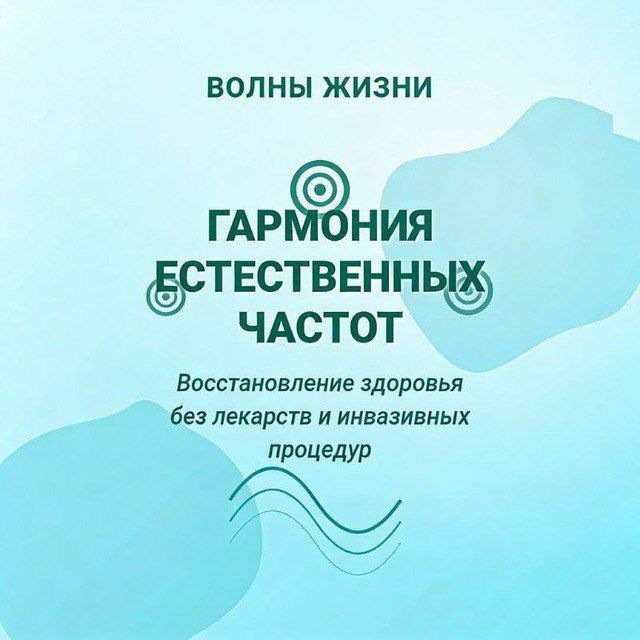

Биорезонансная терапия: что это и как её слушают
Что такое БРТ простыми словами: откуда взялись частотные программы, три режима прослушивания, наушники и курс в 21 день.
Читать далее
Что такое БРТ простыми словами: откуда взялись частотные программы, три режима прослушивания, наушники и курс в 21 день.
Читать далееКто такой Раймонд Райф, что такое CAFL и ETDFL, и почему низкие частоты поднимают октавами, чтобы их было слышно.
Читать далее